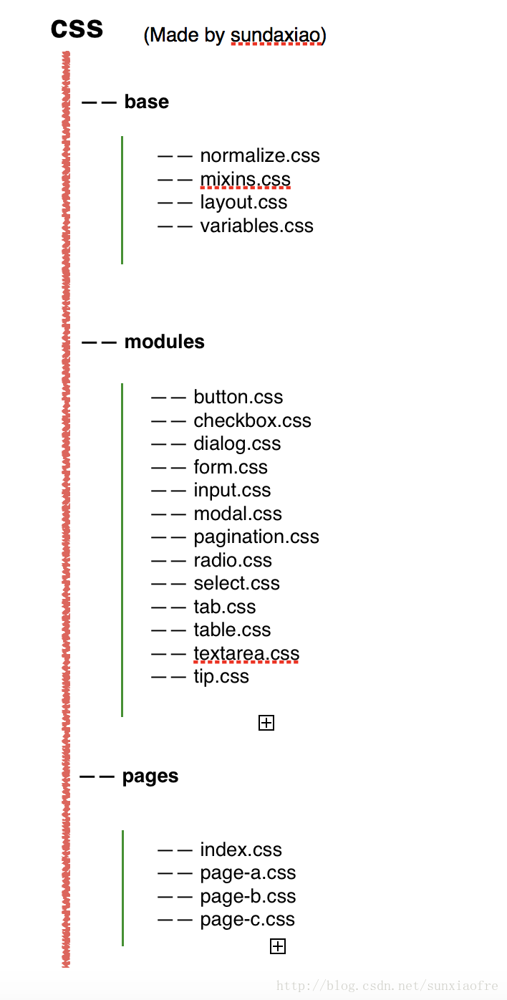
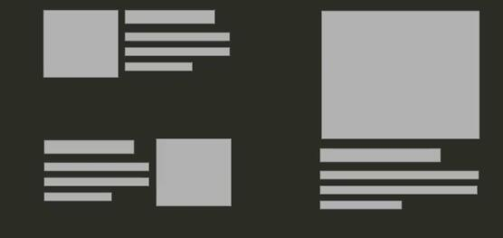

工程化目的
- 提供一致、合理的开发基础
- 应对变化
- 提升效率
文件结构

CSS reset
- 设置HTMl标签的默认样式
- 使其在各个浏览器表现
基本一致 - 让默认样式
归零
注意：reset
normalize.css
- 设置HTML标签的默认演示
- 使其在各个浏览器表现基本一致
保留标签的默认样式
注意：normalize
CSS模块
- 可复用的CSS代码段
- 与模块在HTML中的位置无关
- 一般与使用的HTML标签无关
CSS模块原则
面向对象（OOCSS）
- 结构和皮肤分离
- .btn, .btn-primary, .btn-info, .btn-danger
- 容器和内容分离
1
2
3
4
5
6
7
8
9
10
11
12
13
14
15
16
17
18
19
20
21/* 不推荐这样写 */
.header .btn{
background:#f66;
color:#fff;
}
/* 推荐如下 */
.btn{
display:inline-block;
padding:0.36em 0.8em;
margin-right:0.5em;
border:none;
border-radius:0.3em;
cursor:pointer;
}
.btn--primary{
background:#09c;
color:#fff;
}
/* html */
<button class="btn">按钮</button>
<button class="btn btn--primary">按钮</button>
Media Object

结构
- .media
- .media__image
- .media__object
- .media__body
- .media__tile
- .media__description
- .media__image
1 | <div class="media media--left"> |
1 | .media, |
单一职责原则（SRP）
- 尽可能细地拆分
可独立复用的组件 - 通过组合方式使用多个组件
- 比如将布局和其他样式拆分
1
2
3
4
5
6
7
8
9
10
11
12.btn{
display:inline-block;
padding:0.36em 0.8em;
margin-right:0.5em;
border:none;
border-radius:0.3em;
cursor:pointer;
}
.btn--primary{
background:#09c;
color:#fff;
}
开闭原则
- 对扩展开放
- 对修改关闭
1
2
3
4
5
6
7
8
9
10
11
12.box{
display:block;
padding:10px;
}
/* bad explame */
.content .box{
padding:20px;
}
/* better example */
.box--large{
padding:20px;
}
Don’t Repeat Yourself（DRY）
1 | /* bad example */ |
命名 Naming
- 基于功能
- 它是用来干什么的？
- .botton/ .form/ .list/ .external-link/ .tab-item/ .nav
- 基于内容
- 元素里面放的是什么内容？
- .news/ .user-info/ .help/ .contact-me
- 基于视觉
- 看起来是什么样的？
- .round-image/ .nowrap
命名原则
- 优先使用基于
功能的命名- 样式与内容无关
- 中小型网站可以基于
内容去命名（如个人简历、个人博客） - 大型网站可以基于
视觉去命名- 不要使用太具体的样式
- 如：不要用#left, #right 用#main, #aside
功能VS视觉VS具体样式
- .warning vs .orange
- .btn-primary vs .btn-blue
- .size-large vs .width-200
- .form-inline
- .nav-stacked
CSS命名规范-BEM
Block：可以独立出来的一个个块Element：Block里面的元素Modifier：修饰，对抽象出来的基本样式的扩展.block__element--modifier1
2
3
4
5<nav class="tabs tabs--stacked">
<a href="#" class="tabs__item tabs__item--active">Home</a>
<a href="#" class="tabs__item">Javascript</a>
<a href="#" class="tabs__item">Css</a>
</nav>
编写简洁易维护的CSS-CSS预处理
css新特性
css变量
1
2
3
4
5
6:root{
--primary-color:#f66;
}
h1,h2,h3{
color:var(--primary-color)
}Nesting 嵌套
1
2
3
4
5
6
7.navbar{
display:table;
& .navbar__item{
display:table-cell;
color:#fff;
}
}minxs
1
2
3
4
5
6
7
8
9
10
11:root{
--h-center{
margin-left:auto;
margin-right:auto;
}
}
.main{
@apply --h-center;
max-width:100em;
min-width:40em;
}颜色相关函数
1
2
3
4
5
6
7
8
9
10:root{
--primary-color:#666;
}
.btn{
background:var(--primary-color);
&:hover{
/* 把颜色加暗20% */
background: color(var(--primary-color) blackness(20%));
}
}import (http请求数量大)
1
2
3
4
5/* app.css */
@import 'variables.css';
@import 'common.css';
@import 'modules/button.css';
@import 'modules/form.css'
Plugins
- AutoPrefixer
- StyleLint